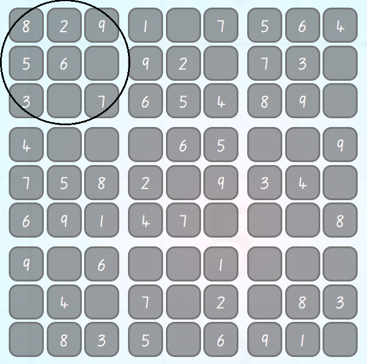

Sudoku is a logic puzzle, where people use deductive reasoning and search for patterns to find out where to place missing numbers on the grid.
Sudoku is played on a grid of 9 x 9 spaces. Every row, column and grid has 9 cells. Each row, column and grid needs to be filled out with the numbers 1-9, making sure there is no repitiion of numbers in any row, column and grid.
The game gets easier as more numbers are filled in. Sounds complicated? Don't worry, as you play the game, it definetely gets easier to understand, so don't forget to give it a try!
As you can see, in the upper left grid (circled), 7 out of the 9 cells have been filled in. The only numbers missing from the square are 1 and 4. By seeing which numbers are missing from each square, row, or column, we can use process of elimination and deductive reasoning to decide which numbers need to go in the blank cells.
For example, in the upper left grid, we know what numbers we need to complete the grid:1 & 4,and based on the neighboring rows and squares we can see the upper right blank cell can have 4 in it because the lower blank cell cannot as it's row already has a 4. This leaves the lower cell with the number 1 to be placed in it, therefore completing the grid.
Sudoku is a game of logic and reasoning, so don't try to guess as one wrong guess can mess the whole puzzle up. If you dont know what number to place in a cell, keep scanning other grids/rows/columns until you find an opportunity. Sudoku rewards patience and with time you will build tricks and techniques which will help you solve the puzzles quicker.